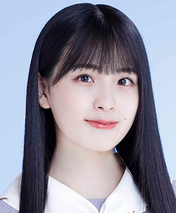

サカミチ
サカミチ大園桃子おおぞのももこ

ごめんねFingers crossed（2021年）・最新
乃木坂46 3期生 ・ 卒業・活動終了
センター曲：4曲（シングル表題曲センター：1曲） フォーメーション/歌唱参加：37曲
ライブ記録：センター 53公演・出演記録のある公演 113公演
ブログ記事：55件
学年：1999年度（同級生 全14人を見る）
フォーメーション統計：登場 20曲・フロント（1列目）9曲
よく隣になるメンバー：与田祐希（4回）、山下美月（4回）、堀未央奈（3回）
センター曲
推しに登録すると、トップページに「推しの新着」（最新のブログ）が出ます。
歴代アー写など（10枚）
タップすると上の写真が切り替わります。上の写真をタップすると最新のアー写に戻ります。